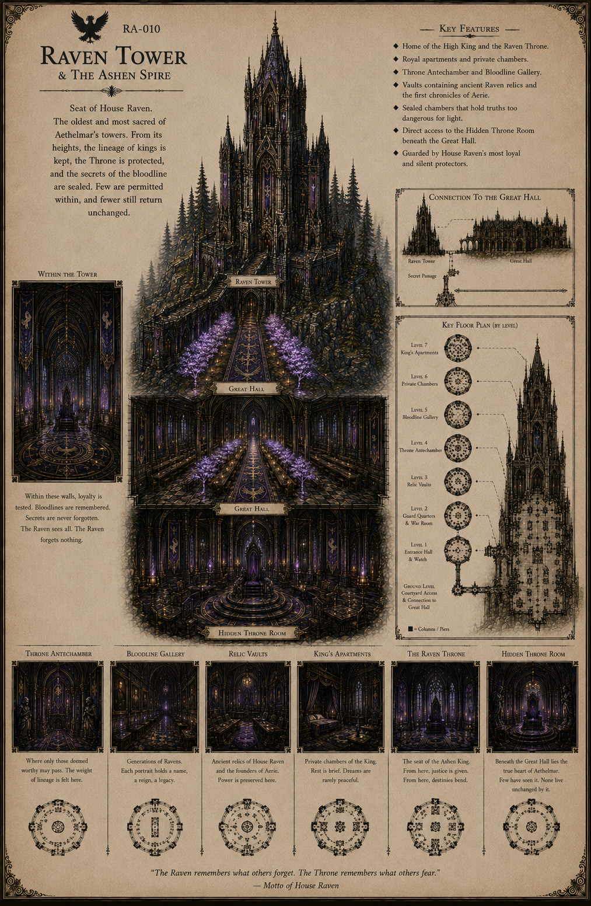

Aethelmar Academy
Raven Tower
The Ashen Spire remains sealed. Its doors remember a royal House that the Dominion tried to bury.

RA-010
Archive Record: Raven Tower
Raven Tower is formally known as the Ashen Spire. Its upper halls remain sealed in black and violet shadow, bound to a legacy few within Aethelmar are willing to name aloud.
Unlike the other House towers, Raven Tower does not merely stand apart. It waits. Its records suggest the tower was connected to older royal architecture within the Academy, though most such documents remain restricted.
Access denied. Royal archive authority required.